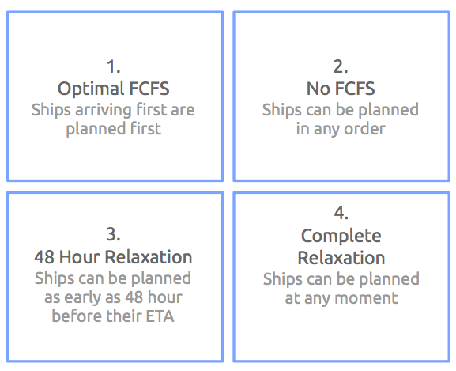
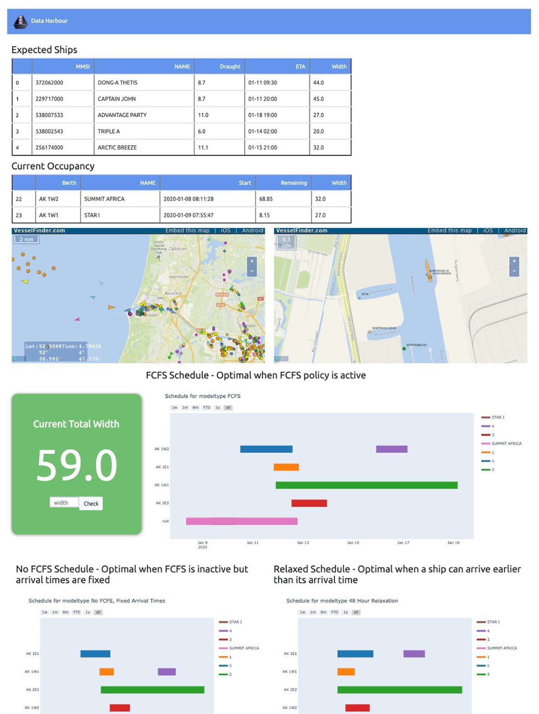

Berth Allocation Problem within Port of Amsterdam
Jun 2020 ~ Port of Amsterdam
Length: 2mo (at 0.25 FTE) + 1mo (at 1.0 FTE)
Programming language: Python (Pandas, NumPy, Math, GeoPandas, Matplotlib, seaborn,
Plotly, datetime, pytz, random, scikit-learn, LightGBM, requests, Beautiful Soup, PuLP, Flask)
Data:
AIS data (signals sent by ships at various times containing
their location, speed, orientation, type, size, etc)
BAOR data (size requirements of the berths)
Terminal Operations data (more detailed information about the operations,
such as the quantity of the cargo and its type, the pump start and end times, etc)
Problem description:
Port of Amsterdam demanded to know if giving up the current First Come, First Served
strategy of assigning vessels to berths would produce any benefits, especially after
the new sea lock will be ready and (more) larger ships will be allowed to moor in
the harbor
Approach:
To answer the research question, four linear programming models were designed, namely optimal
FCFS, no FCFS with fixed arrival times, 48-hour arrival time relaxation, and complete arrival
time relaxation. Then, they were transposed to Python via the PuLP package. The comparison of
the model types was done using a rolling time window (of each day within the time frame, a
schedule was created for the following two weeks, after which the objective value was
calculated).

Results:
After comparing the averages of all completion times, it was found that the Optimal FCFS model already shows an improvement compared to the historical situation. Between the Optimal FCFS and the No FCFS model, there is no considerable difference because the vessels are constrained to be scheduled after their arrival time at the port. When relaxation is allowed, a significant efficiency gain is possible, although this case is less reasonable. Lastly, the entire analysis was performed again, this time with a proportion of vessels enlarged. The results pointed out that there are improvements of up to 3% on the completion time (depending on the percentage of boats enlarged) from the Optimal FCFS to No FCFS, and up to 42% comparing the Optimal FCFS and the unrealistic Complete Relaxation.
